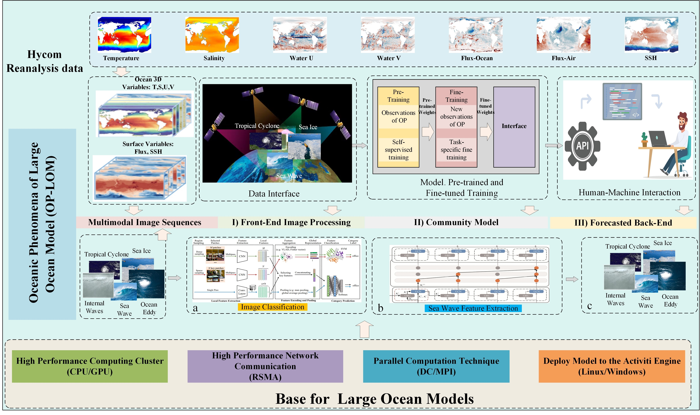
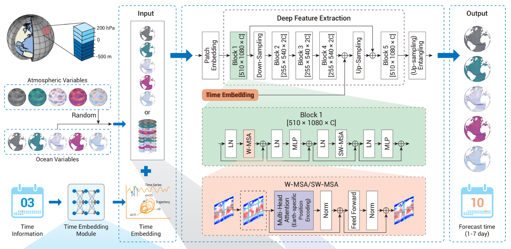

About
Zimeng Zhao is a postdoctoral researcher working with Prof. Xiaofeng Li in the Laboratory of Ocean Circulation and Waves, Institute of Oceanology, Chinese Academy of Sciences (IOCAS). He earned his Ph.D. in control science and engineering from Southeast University in 2024 under the supervision of Prof. Yangang Wang.
His research interests lie at the intersection of oceanography and artificial intelligence, with a particular focus on geophysically-constrained environmental forecasting.
He serves as a reviewer for journals (JGR:MLC, IEEE TVCG, IEEE TMM) and conferences (IEEE/CVF CVPR, IEEE/CVF ICCV, ACM MM).
News
-
2026.10
Oral presentation at AP-GARSS 2026. 📍 Qingdao Cosmopolitan Exposition
-
2026.09
Invited exhibition at Inclusion Conference on the Bund 2026. 📍 Shanghai Expo Park
-
2026.08
Invited talk at NCCA 2026 AI4Ocean Workshop. 📍 Wuhan Optics Valley
-
2026.02
Oral presentation at OSM 2026. 📍 Glasgow SEC
-
2025.10
Invited talk at PRCV 2025 AI4S Workshop. 📍 Shanghai NECC
-
2024.11
Joined IOCAS as a postdoc.
-
2024.10
Defended the Ph.D. thesis "Research on Reconstruction of Interactive Digital Hands".
-
2024.05
Honored to receive the Huawei Scholarship.
-
2023.10
Poster presentations at ICCV 2023. 📍 Paris Convention Centre
-
2023.04
Invited talk at China3DV 2023 Student Forum. 📍 Beijing Friendship Hotel
-
2022.08
Invited exhibition at CICAI 2022. 📍 Beijing BYCC
-
2021.11
Honored to receive the SEU Doctoral Entrance Scholarship.
-
2021.06
Poster presentations at China3DV 2021. 📍 Xiamen University Science and Art Center
-
2019.06
Honored to receive the SEU Excellent Bachelor Thesis and Excellent Graduate.
Research
AI Oceanography: Environmental Forecasting (2025 ~)

Artificial intelligence for ocean phenomena forecasting
Xiaofeng Li, Xudong Zhang, Yibin Ren, Yunhe Wang,
Nan Yang, Chong Wang, Shanshan Mu, Haoyu Wang,
Yuan Zhou, Yingjie Liu, Zimeng Zhao, and Fan Wang*
Science Bulletin, 2026
[paper]

LangYa: a large AI model for global ocean forecasting
Nan Yang, Chong Wang, Zimeng Zhao, Meihua Zhao,
Huiling Zheng, Bin Zhang, Fan Wang*, and Xiaofeng Li*
Science Bulletin, 2026
[paper]
3D Vision: Ariticulated Entities Reconstruction (2019 ~)

Music Conditioned Generation for Human-centric Video
Zimeng Zhao, Binghui Zuo, and Yangang Wang*
IEEE Signal Processing Letters (SPL), 2024
[paper]

Skeleton Extraction for Articulated Objects with the Spherical Unwrapping Profiles
Zimeng Zhao, Wei Xie, Binghui Zuo, and Yangang Wang*
IEEE Transactions on Visualization and Computer Graphics (TVCG), 2023
[paper]

Semi-supervised Hand Appearance Recovery via Structure Disentanglement and Dual Adversarial Discrimination
Zimeng Zhao, Binghui Zuo, Zhiyu Long, and Yangang Wang*
IEEE/CVF Conference on Computer Vision and Pattern Recognition (CVPR), 2023
[paper]

Stability-driven Contact Reconstruction From Monocular Color Images
Zimeng Zhao, Binghui Zuo, Wei Xie, and Yangang Wang*
IEEE/CVF Conference on Computer Vision and Pattern Recognition (CVPR), 2022
[paper]

TravelNet: Self-supervised Physically Plausible Hand Motion Learning
From Monocular Color Images
Zimeng Zhao, Xi Zhao, and Yangang Wang*
IEEE/CVF International Conference on Computer Vision (ICCV), 2021
[paper]
Affiliations
-
2024.11 - Current
Postdoc, Chinese Academy of Sciences, Qingdao, China
-
2021.03 - 2024.11
Ph.D., Southeast University, Nanjing, China
-
2019.09 - 2020.12
M.S. student, Southeast University, Nanjing, China
-
2015.09 - 2019.06
B.E., Southeast University, Nanjing, China